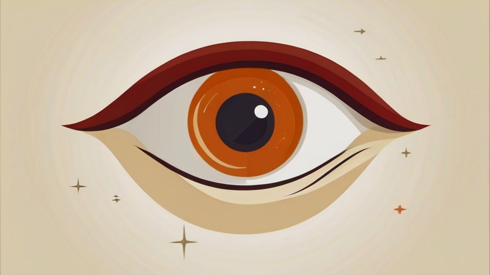
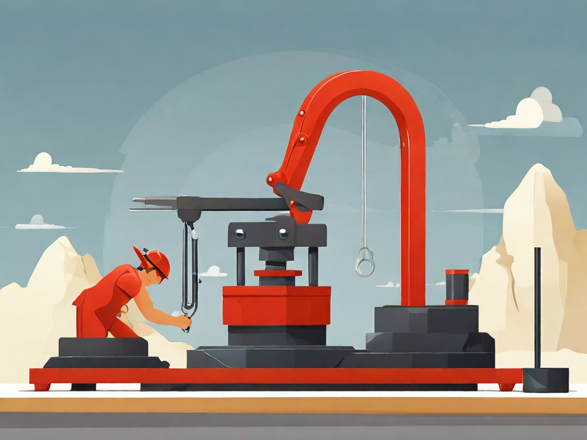
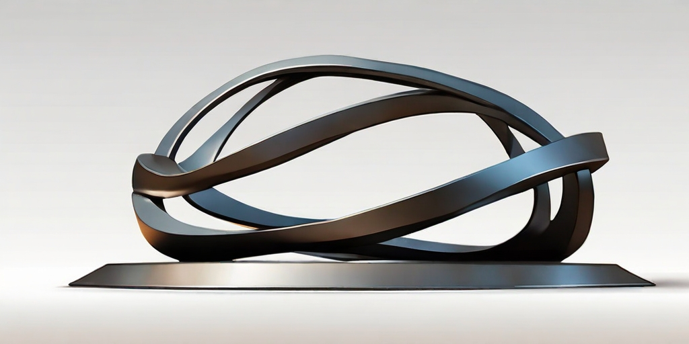
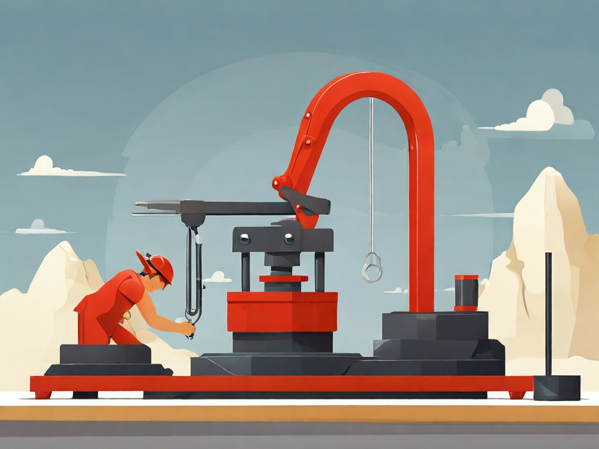
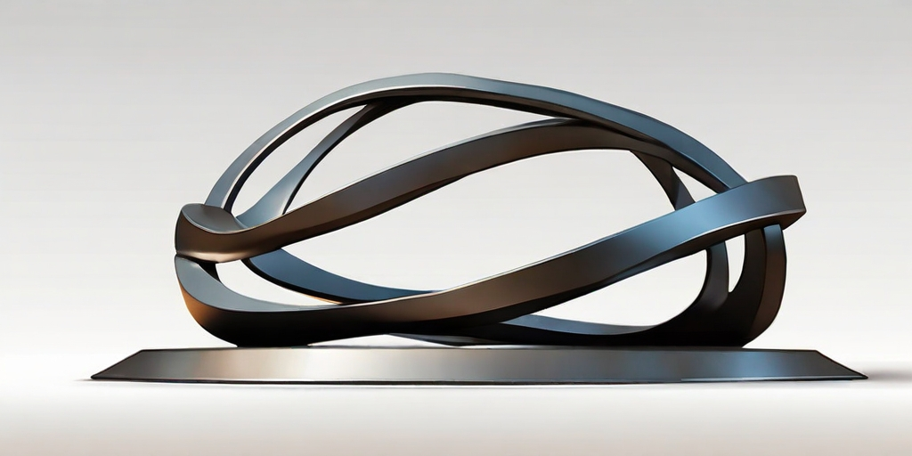
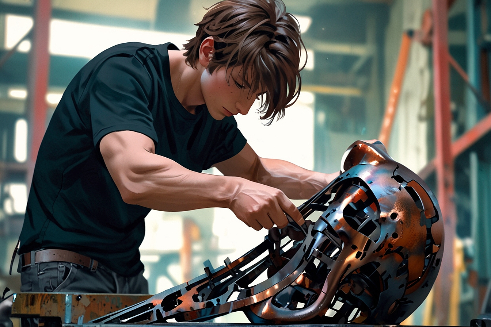
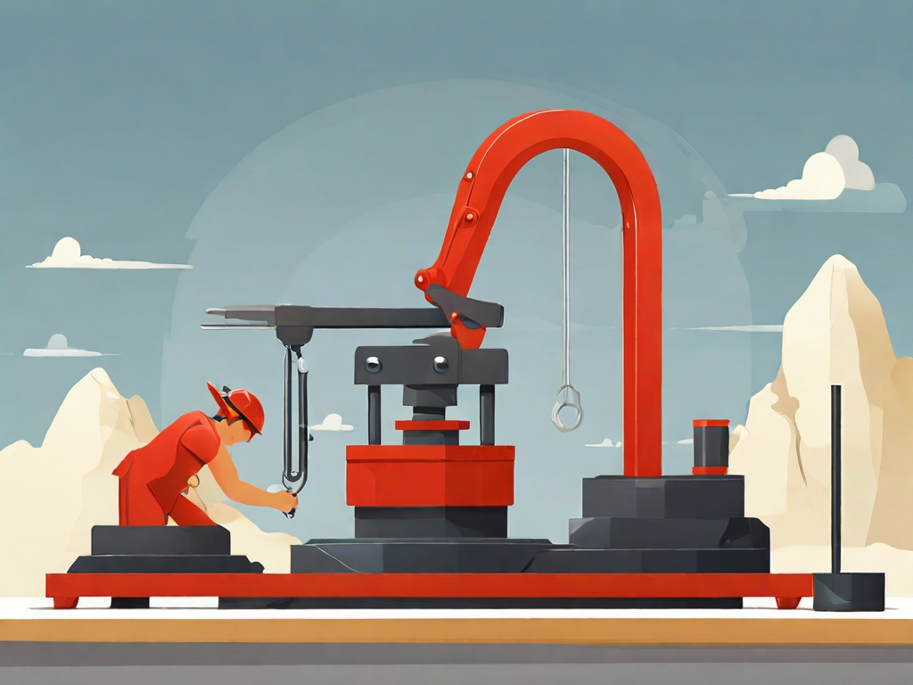
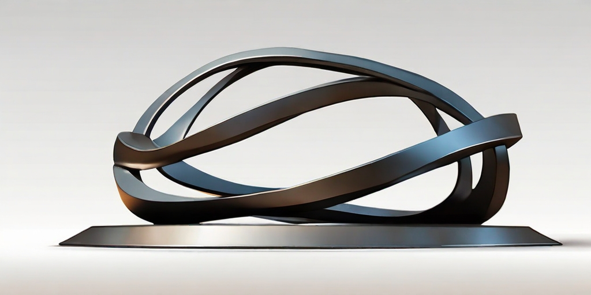

Some random information
 



This website has some subtext that goes here under the main title. It's a smaller font and the color is lower contrast.



Inspiration is for amateurs - the rest of us just show up and get to work. And the belief that things will grow out of the activity itself and that you will - through work - bump into other possibilities and kick open other doors that you would never have dreamt of if you were just sitting around looking for a great ‘art [idea].' And the belief that process, in a sense, is liberating and that you don't have to reinvent the wheel every day. Today, you know what you'll do, you could be doing what you were doing yesterday, and tomorrow you are gonna do what you [did] today, and at least for a certain period of time you can just work. If you hang in there, you will get somewhere.
Chuck Close
Call to action! It's time! Signup for our product by clicking that button right over here!